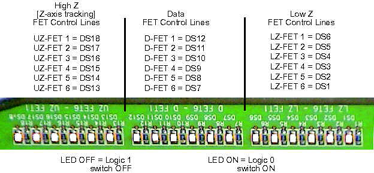
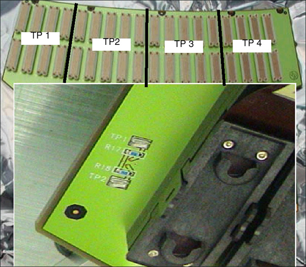
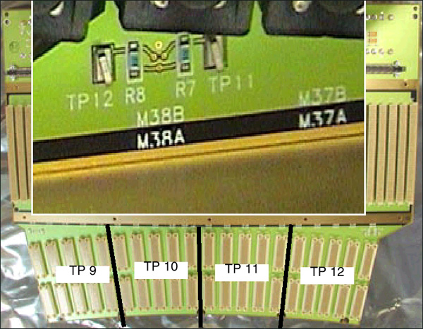
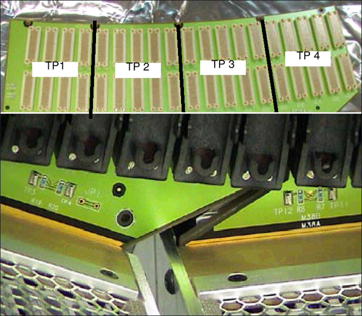

Proprietary to General Electric
Direction 5193755-800, Rev# 8
BrightSpeed (Ltd. Access) Service Methods - Adv
Proprietary to General Electric |
| Last Revised: | August 2003 |
MDAS 16 LEDs are located on the Right Backplane. Low Z FET lines are set the same as Data FET lines in the current implementation.
Illustration 1: MDAS 16 LEDs (as viewed with DAS at 12 o’clock)

Test Points are available on the Center Backplane to measure Power Supply voltages.
Table 1: Backplane Voltage Test Points
| Test Point | Description | DC Level Specifications | Noise & Ripple P-P Specification |
|---|---|---|---|
| TP1 | +5 VDC Digital wrt LGND | +5 VDC ± 0.25 VDC | 5 mV in 20 Mhz Bandwidth |
| TP2 | LGND (Logic Ground) | ||
| TP3 | +12 VDC Analog wrt AGND | +12 VDC ± 0.6 VDC | 5 mV in 20 Mhz Bandwidth |
| TP4 | AGND (Analog Ground) | ||
| TP5 | +5 VDC Analog wrt AGND | +5 VDC ± 0.25 VDC | 5 mV in 20 Mhz Bandwidth |
| TP6 | -12 VDC Analog wrt AGND | -12 VDC ± 0.6 VDC | 5 mV in 20 Mhz Bandwidth |
| TP7 | AGND (Analog Ground) | On Center Chassis | |
| TP8 | -5 VDC Analog wrt AGND | -5 VDC ± 0.25 VDC | 5 mV in 20 Mhz Bandwidth |
Illustration 2: MDAS 16 Center Chassis Power Supply Test Points

The MDAS16 backplanes have limiting resistors (392 ohms nominal) between the DVSS (-5V_A) supply and the Detector flex module connections. These resistors limit the current to prevent the backplane traces from fusing in the case of a short on the DDIF.
Each distinct backplane has been divided up into 4 groups of modules, each group having its own limiting resistor and test point. This is to make finding the shorted module easier. Each test point is referenced to the DAS center chassis TP 4 AGND test point.
Table 2: DVSS (-5v_A) Testpoint Matrix
| Right Chassis Modules A & B Sides | Center Chassis Modules A & B Sides | Left Chassis Modules A & B Sides | |
|---|---|---|---|
| Group 1 | TP4 1-4 | TP9 19-23 | TP4 39-43 |
| Group 2 | TP3 5-9 | TP10 24-28 | TP3 44-48 |
| Group 3 | TP2 10-14 | TP11 29-33 | TP2 49-53 |
| Group 4 | TP1 15-18 | TP12 34-38 | TP1 54-57 |
Illustration 3: Left Backplane DVSS (-5v_A) Zone Coverage

Illustration 4: Center Backplane DVSS (-5v_A) Zone Coverage

Illustration 5: Right Backplane DVSS (-5v_A) Zone Coverage

If you have determined there is a short on the DDIF, measure the voltage at each test point in the table to determine which module group is shorted. The test point will read zero volts for a shorted module.
Once the module set is identified, leave the meter hooked to the test point and remove the Detector flexes and the interposers from the “A” side, one at a time. When the short is cleared, the voltage at the test point will change to about -5V.
If this does not happen, then remove the “B” side Detector flexes and interposers until the short is cleared. If you have done all of the above and the test point still reads zero, inspect the backplane and connectors for particles around the shorted module connector.